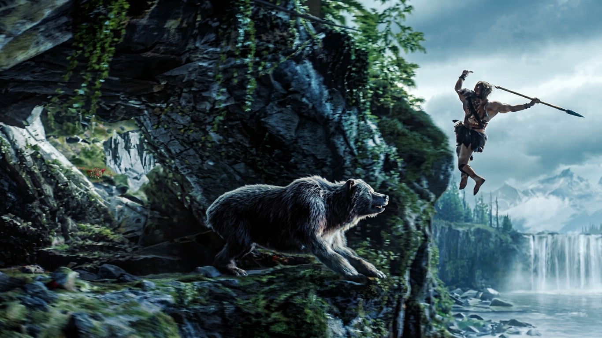
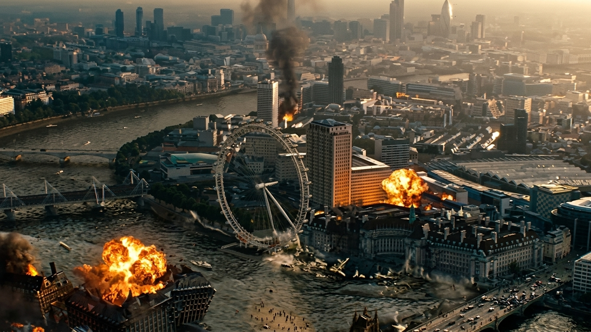
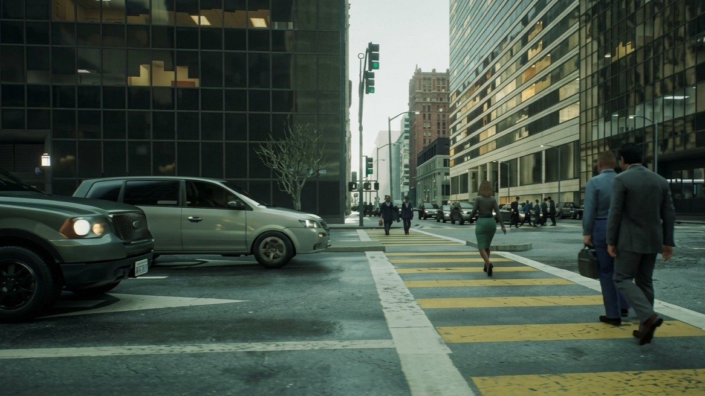
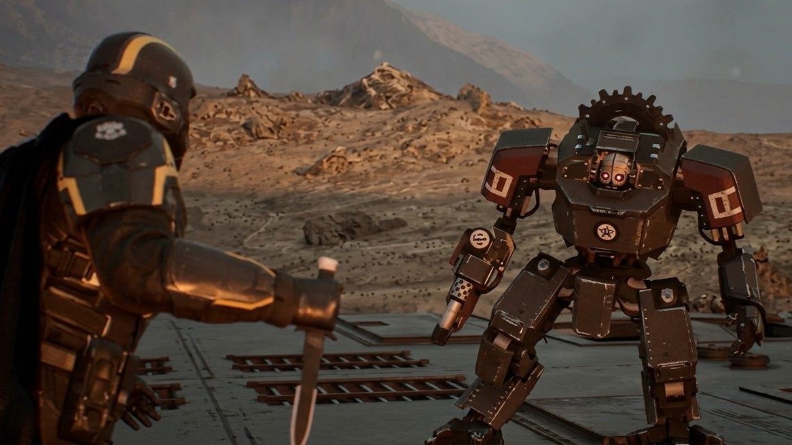
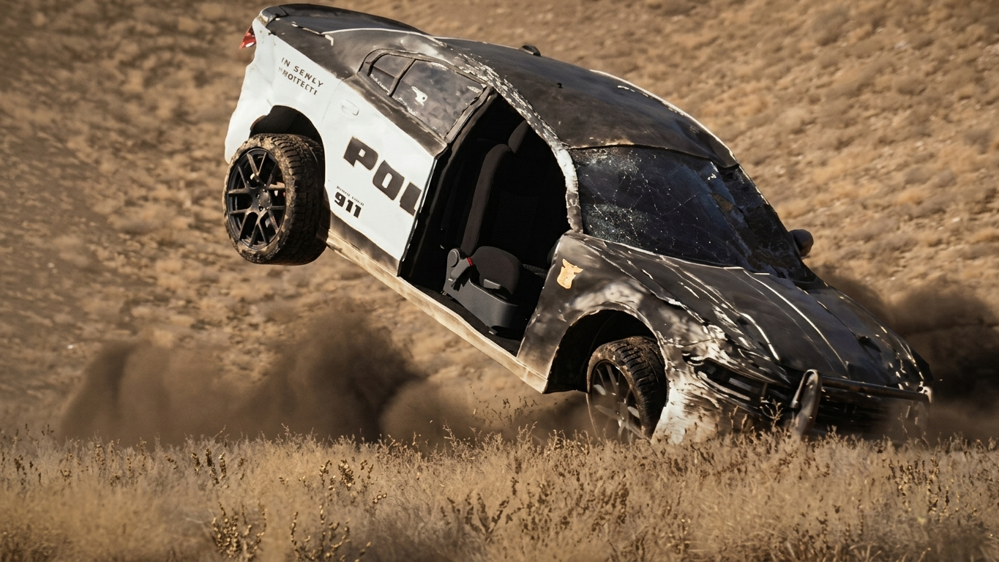

PROJECT VISUAL / 01
Dark Fantasy Environment
Selected studio visual from the Dark Fantasy project collection.
View portfolioSELECTED STUDIO PROJECTS / CREATIVE PRODUCTION
Explore selected visual projects from AUTOTUBE CREW STUDIO and the creative disciplines that help turn ambitious concepts into cinematic and digital experiences.
BEHIND THE CREATION
Every creative production begins with an idea, a purpose and a visual direction. Bringing that idea to life requires coordinated planning, creative development, technical execution and careful review.
Our work spans 3D animation, CGI, visual effects, film and video production and digital content. The production approach is adapted to the requirements and approved scope of each project.
SELECTED VISUAL PROJECTS
These selected visuals offer a look at different creative worlds and cinematic subjects represented in the studio's current project collection.
Selected studio visual from the Dark Fantasy project collection.
View portfolio
Selected studio visual from the King of Forest & Mountain project collection.
View portfolio
Selected studio visual from the Destroy Earth project collection.
View portfolio
Selected studio visual from the Matrix City project collection.
View portfolio
Selected studio visual from the Sniper cinematic project collection.
View portfolio
Selected studio visual from the Car Chase cinematic project collection.
View portfolioPRODUCTION METHODOLOGY
A considered production process connects creative decisions with the technical work needed to complete each assignment.
Understand objectives, audience, creative intent, references and expected deliverables.
Shape the visual approach, production plan, technical requirements and project scope.
Execute the agreed creative and technical work across the required production disciplines.
Review the work against agreed requirements and prepare approved final deliverables.
CREATIVE DISCIPLINES
Projects may draw on one specialist service or combine capabilities according to their brief and production requirements.
Characters, environments, movement and digital storytelling.
Digital assets, lighting, rendering and computer-generated imagery.
Compositing, visual integration and image enhancement.
Cinematic, commercial and visual content production.
HAVE A PROJECT IN MIND?
Share your creative brief, production goals or technical requirements with AUTOTUBE CREW STUDIO.
Request a project quotation